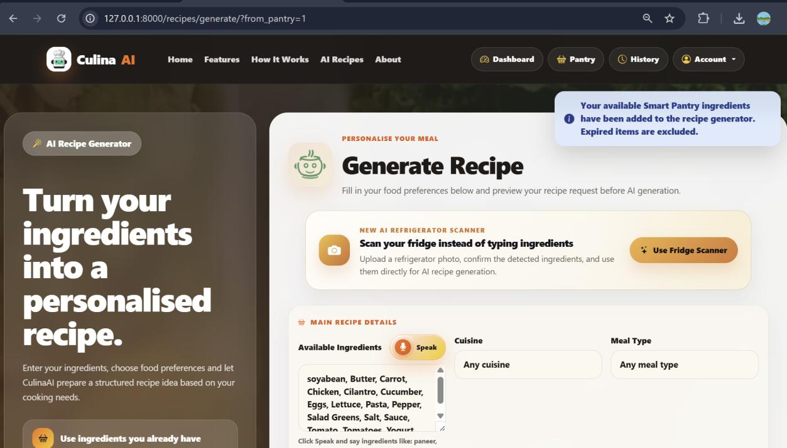

MSc Dissertation · Live · Jun–Sep 2026
CulinaAI
AI-Powered Recipe Generation & Meal Personalisation Platform

CulinaAI is an AI-assisted recipe generation and meal personalisation system built as my MSc dissertation at the University of Leicester. It takes a user's available ingredients, dietary preferences, allergies, cuisine choice, and cooking time, and generates a personalised recipe through the OpenAI API — validated end-to-end before it ever reaches the user.
Every AI-generated recipe passes through an 8-point automated validation engine checking allergy safety, dietary compliance, structure, and equipment constraints before it's shown or saved. Beyond generation, the platform includes a Smart Pantry with expiry tracking, refrigerator-scan ingredient detection, recipe modification with side-by-side revalidation, and a real-time interactive AI cooking assistant.
- AI recipe generation across 7 personalisation parameters (ingredients, cuisine, diet, allergies, cooking time, servings, equipment)
- 8-point automated AI safety validation engine
- Smart Pantry with expiry tracking
- Refrigerator-scan ingredient detection (GPT-4o mini vision)
- Recipe modification with side-by-side revalidation
- Real-time interactive AI cooking assistant
- Persistent recipe images via AWS S3
- Automated CI pipeline running on every push
The hard part was never calling the OpenAI API — it was deciding what happens when the model is wrong. A direct "prompt and display" design leaves the whole app dependent on a language model's reliability for things like allergy safety, where fluent-sounding output can still be dangerously incorrect.
The validation engine treats safety failures as hard failures rather than score deductions: a single critical fail caps the score and can trigger controlled regeneration, with every attempt persisted as evidence rather than silently discarded.
The system met all 29 functional and 10 non-functional requirements defined for the project, verified through 64 structured test scenarios across 6 categories — functional, integration, AI-validation, pantry/shopping, modification, and interface testing — a 100% pass rate.
Across every one of those validation scenarios, the 8-point engine caught 100% of constraint violations before storage — cutting unsafe AI output to zero rather than just flagging it after the fact.
Skills demonstrated: Full-stack development · REST API integration · Automated testing (Django TestCase) · CI/CD pipelines · Cloud deployment · AWS (S3, IAM least-privilege access) · Database design (PostgreSQL) · Production debugging
Hosted on a free tier — first load may take 30–60 seconds if idle.
Worth knowing
A critical allergy or diet failure caps the score outright — even if every other check passes perfectly, the recipe still gets rejected or sent back for regeneration. A high score is never allowed to hide a safety problem.
Try the validation logic
A simplified, in-browser recreation of the real 8-gate engine — pick constraints, generate a mock recipe, and see how it's scored. This does not call the live app or the OpenAI API; it mirrors the scoring rules described above.
Pick your constraints and run the check.